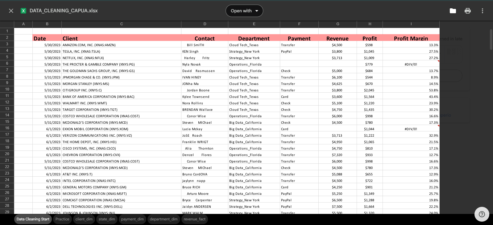
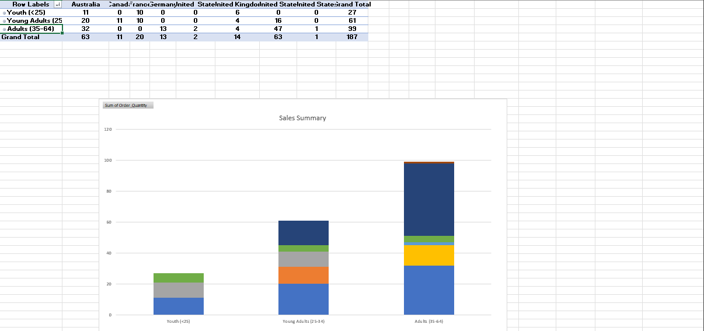
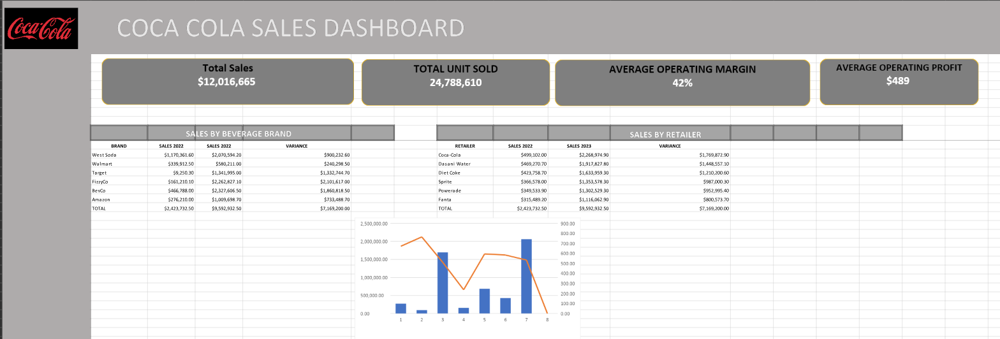
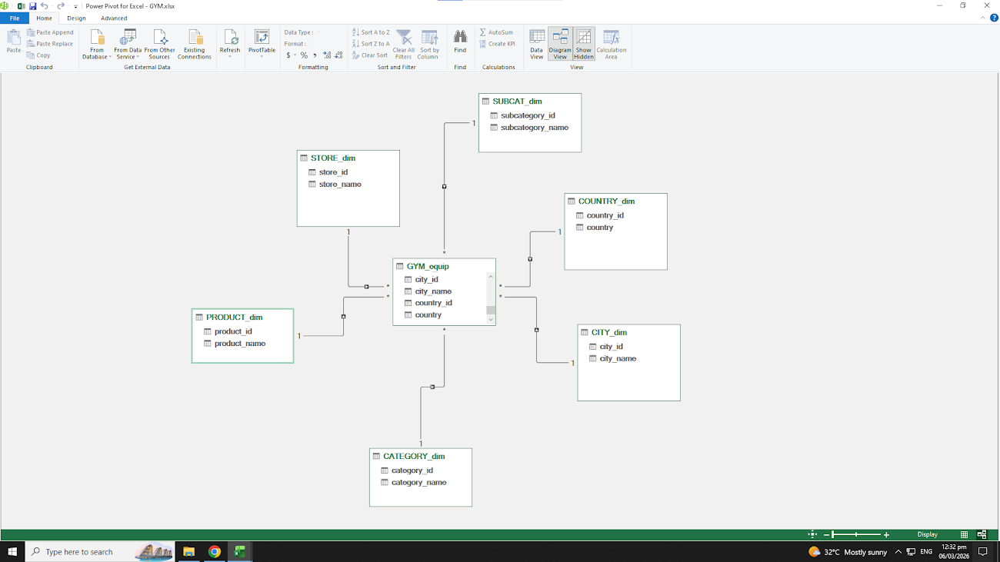

===

Data preparation and data cleaning involve organizing datasets and removing errors, duplicates, or missing values to ensure accurate and reliable analysis.

Organized and analyzed data using pivot tables and charts to highlight important trends and insights.

Dashboards in Excel visualize and summarize data for quick insights and decisions.

Normalization using Power Query refers to the process of structuring and cleaning raw data in Excel